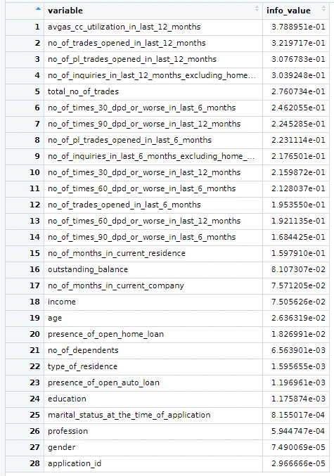

## The Goal
## The Goal
## The Goal
The Goal of this study is to help the credit card provider company CredX to identify the right customer based on predictive model where the past data of the bank’s applicants was used to built the predictive model and determine the factors affecting credit risk.
Three models were created which are the Logistic regression, random forest and support vector machine among which the best model is defined as the model with the best accuracy taking inconsideration the sensitivity and specificity.
The data provided are two data frames one provide the Demographic data that is obtained from the applicants at the time of the credit card application and the other is Credit Bureau which is taken from the credit bureau.The Demographic data composed of 71295 observations for 11 independent variables and one dependent variable that is the performance_tag while the size of the Credit Bureau is also 71295 observations for 18 independent variables and one dependent variable that is the performance_tag.
During the study we will provide two models the first one is based on the Demographic data only and the second one is based on both the Demographic data and the Credit Bureau data to check the predictive power of the application data.
In the univariate analysis, it is easy notice the frequency of data in the dataset through the graphs. The most frequent values of the dominant predictors are listed as shown below,
In the Bivariate Analysis, the correlation plot is easily identified for the demogs data and combined data in the above cluster of plots.
Then the dataset is briefly analysed by the scatter plots between Performance Tag and
## tibble [69,870 x 12] (S3: tbl_df/tbl/data.frame)
## $ application_id : num [1:69870] 9.54e+08 4.33e+08 9.41e+08 3.92e+08 1.82e+08 ...
## $ age : num [1:69870] 48 31 32 43 35 20 42 34 30 22 ...
## $ gender : chr [1:69870] "F" "M" "M" "M" ...
## $ marital_status_at_the_time_of_application: chr [1:69870] "Married" "Married" "Single" "Married" ...
## $ no_of_dependents : num [1:69870] 2 4 2 1 5 1 2 2 3 1 ...
## $ income : num [1:69870] 40 55 46 53 44 39 55 49 48 38 ...
## $ education : chr [1:69870] "Bachelor" "Professional" "Bachelor" "Bachelor" ...
## $ profession : chr [1:69870] "SAL" "SE_PROF" "SE_PROF" "SE" ...
## $ type_of_residence : chr [1:69870] "Rented" "Rented" "Rented" "Rented" ...
## $ no_of_months_in_current_residence : num [1:69870] 113 112 104 94 112 116 104 108 115 111 ...
## $ no_of_months_in_current_company : num [1:69870] 56 46 49 53 43 52 41 40 58 57 ...
## $ performance_tag : num [1:69870] 0 0 0 0 0 0 0 0 0 0 ...
## - attr(*, "spec")=
## .. cols(
## .. `Application ID` = col_double(),
## .. Age = col_double(),
## .. Gender = col_character(),
## .. `Marital Status (at the time of application)` = col_character(),
## .. `No of dependents` = col_double(),
## .. Income = col_double(),
## .. Education = col_character(),
## .. Profession = col_character(),
## .. `Type of residence` = col_character(),
## .. `No of months in current residence` = col_double(),
## .. `No of months in current company` = col_double(),
## .. `Performance Tag` = col_double()
## .. )## Univariate analysis of demogs data## demogs_data
##
## 12 Variables 69870 Observations
## --------------------------------------------------------------------------------
## application_id
## n missing distinct Info Mean Gmd .05 .10
## 69870 0 69867 1 499226413 333192630 50010162 99493659
## .25 .50 .75 .90 .95
## 248578041 498048707 749864490 899535686 949412069
##
## lowest : 100450 128993 142768 176721 197956
## highest: 1000026076 1000026258 1000057167 1000072652 1000084142
## --------------------------------------------------------------------------------
## age
## n missing distinct Info Mean Gmd .05 .10
## 69870 0 53 0.999 45 11.38 29 31
## .25 .50 .75 .90 .95
## 37 45 53 58 62
##
## lowest : -3 0 15 16 17, highest: 61 62 63 64 65
## --------------------------------------------------------------------------------
## gender
## n missing distinct
## 69868 2 2
##
## Value F M
## Frequency 16506 53362
## Proportion 0.236 0.764
## --------------------------------------------------------------------------------
## marital_status_at_the_time_of_application
## n missing distinct
## 69864 6 2
##
## Value Married Single
## Frequency 59547 10317
## Proportion 0.852 0.148
## --------------------------------------------------------------------------------
## no_of_dependents
## n missing distinct Info Mean Gmd
## 69867 3 5 0.958 2.86 1.564
##
## lowest : 1 2 3 4 5, highest: 1 2 3 4 5
##
## Value 1 2 3 4 5
## Frequency 15218 15128 15645 12000 11876
## Proportion 0.218 0.217 0.224 0.172 0.170
## --------------------------------------------------------------------------------
## income
## n missing distinct Info Mean Gmd .05 .10
## 69870 0 63 0.999 27.41 17.81 4.5 6.0
## .25 .50 .75 .90 .95
## 14.0 27.0 40.0 49.0 54.0
##
## lowest : -0.5 0.0 1.0 2.0 3.0, highest: 56.0 57.0 58.0 59.0 60.0
## --------------------------------------------------------------------------------
## education
## n missing distinct
## 69752 118 5
##
## lowest : Bachelor Masters Others Phd Professional
## highest: Bachelor Masters Others Phd Professional
##
## Value Bachelor Masters Others Phd Professional
## Frequency 17302 23481 119 4464 24386
## Proportion 0.248 0.337 0.002 0.064 0.350
## --------------------------------------------------------------------------------
## profession
## n missing distinct
## 69857 13 3
##
## Value SAL SE SE_PROF
## Frequency 39674 13927 16256
## Proportion 0.568 0.199 0.233
## --------------------------------------------------------------------------------
## type_of_residence
## n missing distinct
## 69862 8 5
##
## lowest : Company provided Living with Parents Others Owned Rented
## highest: Company provided Living with Parents Others Owned Rented
##
## Value Company provided Living with Parents Others
## Frequency 1603 1778 198
## Proportion 0.023 0.025 0.003
##
## Value Owned Rented
## Frequency 14003 52280
## Proportion 0.200 0.748
## --------------------------------------------------------------------------------
## no_of_months_in_current_residence
## n missing distinct Info Mean Gmd .05 .10
## 69870 0 121 0.889 34.61 38.07 6 6
## .25 .50 .75 .90 .95
## 6 10 61 98 110
##
## lowest : 6 7 8 9 10, highest: 122 123 124 125 126
## --------------------------------------------------------------------------------
## no_of_months_in_current_company
## n missing distinct Info Mean Gmd .05 .10
## 69870 0 83 1 34.2 23.45 3 6
## .25 .50 .75 .90 .95
## 17 34 51 62 68
##
## lowest : 3 4 5 6 7, highest: 121 123 126 128 133
## --------------------------------------------------------------------------------
## performance_tag
## n missing distinct Info Sum Mean Gmd
## 69870 0 2 0.121 2948 0.04219 0.08083
##
## --------------------------------------------------------------------------------## application_id age gender
## nbr.val 6.987000e+04 6.987000e+04 NA
## nbr.null 0.000000e+00 1.900000e+01 NA
## nbr.na 0.000000e+00 0.000000e+00 NA
## min 1.004500e+05 -3.000000e+00 NA
## max 1.000084e+09 6.500000e+01 NA
## range 9.999837e+08 6.800000e+01 NA
## sum 3.488095e+13 3.143841e+06 NA
## median 4.980487e+08 4.500000e+01 NA
## mean 4.992264e+08 4.499558e+01 NA
## SE.mean 1.091638e+06 3.756691e-02 NA
## CI.mean.0.95 2.139608e+06 7.363106e-02 NA
## var 8.326222e+16 9.860561e+01 NA
## std.dev 2.885519e+08 9.930036e+00 NA
## coef.var 5.779981e-01 2.206892e-01 NA
## marital_status_at_the_time_of_application no_of_dependents
## nbr.val NA 6.986700e+04
## nbr.null NA 0.000000e+00
## nbr.na NA 3.000000e+00
## min NA 1.000000e+00
## max NA 5.000000e+00
## range NA 4.000000e+00
## sum NA 1.997890e+05
## median NA 3.000000e+00
## mean NA 2.859562e+00
## SE.mean NA 5.241886e-03
## CI.mean.0.95 NA 1.027408e-02
## var NA 1.919761e+00
## std.dev NA 1.385554e+00
## coef.var NA 4.845338e-01
## income education profession type_of_residence
## nbr.val 6.987000e+04 NA NA NA
## nbr.null 2.600000e+01 NA NA NA
## nbr.na 0.000000e+00 NA NA NA
## min -5.000000e-01 NA NA NA
## max 6.000000e+01 NA NA NA
## range 6.050000e+01 NA NA NA
## sum 1.915029e+06 NA NA NA
## median 2.700000e+01 NA NA NA
## mean 2.740845e+01 NA NA NA
## SE.mean 5.854818e-02 NA NA NA
## CI.mean.0.95 1.147543e-01 NA NA NA
## var 2.395067e+02 NA NA NA
## std.dev 1.547600e+01 NA NA NA
## coef.var 5.646435e-01 NA NA NA
## no_of_months_in_current_residence no_of_months_in_current_company
## nbr.val 6.987000e+04 6.987000e+04
## nbr.null 0.000000e+00 0.000000e+00
## nbr.na 0.000000e+00 0.000000e+00
## min 6.000000e+00 3.000000e+00
## max 1.260000e+02 1.330000e+02
## range 1.200000e+02 1.300000e+02
## sum 2.418071e+06 2.389497e+06
## median 1.000000e+01 3.400000e+01
## mean 3.460814e+01 3.419918e+01
## SE.mean 1.393930e-01 7.698814e-02
## CI.mean.0.95 2.732100e-01 1.508966e-01
## var 1.357602e+03 4.141317e+02
## std.dev 3.684566e+01 2.035023e+01
## coef.var 1.064653e+00 5.950500e-01
## performance_tag
## nbr.val 6.987000e+04
## nbr.null 6.692200e+04
## nbr.na 0.000000e+00
## min 0.000000e+00
## max 1.000000e+00
## range 1.000000e+00
## sum 2.948000e+03
## median 0.000000e+00
## mean 4.219264e-02
## SE.mean 7.605280e-04
## CI.mean.0.95 1.490633e-03
## var 4.041300e-02
## std.dev 2.010299e-01
## coef.var 4.764571e+00
## Min. 1st Qu. Median Mean 3rd Qu. Max.
## -3 37 45 45 53 65## Min. 1st Qu. Median Mean 3rd Qu. Max. NA's
## 1.00 2.00 3.00 2.86 4.00 5.00 3## Min. 1st Qu. Median Mean 3rd Qu. Max.
## -0.50 14.00 27.00 27.41 40.00 60.00## Min. 1st Qu. Median Mean 3rd Qu. Max.
## 6.00 6.00 10.00 34.61 61.00 126.00## Min. 1st Qu. Median Mean 3rd Qu. Max.
## 3.0 17.0 34.0 34.2 51.0 133.0## Distribution of age shows that most of the people are among the range of 37-53. There is two outlier outcome less than 0 which are not acceptable for age variable.

## Distribution of gender represents that almost 76 percent of the clients are male.
## Distribution of marital status at the time of application represents that almost 85 percent of the clients are married.
## Distribution of education data shows that professionals, masters, and bachelors indicate the most three type of educated clients, 35, 33, and 25 percent respectively.
## Distribution of profession data shows that SAL is the most with number of 39674 of all clients.
## Distribution of type of residence data shows that 74% of the clients are renting the house and 20% have their own house.
## Distribution of number of dependents data shows that half of the observations are have 2, 3, and 4 dependents. Other have 1 or 5 dependents.

## Distribution of income data shows that half of the observations have $15-$40 income. The maximum income is $60.The minimum is -0.5 which is an outlier amount and it's not acceptable as income.

## Distribution of no of months in current residence represents that most of the observations relates to the 0 month in current residents.

## Distribution of no of months in current company represents that most of the clients are new in the company and max number months is 75 month.

## Bivariate analysis of demogs data## According to the results of correlation, there is no significant correlation between performance tag and other variables of the demogs data. The only positive correlation relates to no of months in current residence, 0.02. The negative correlations relates to income and no of months in current company which are, -0.04 and -0.02, respectively. Negative correlation is a relationship between two variables in which one variable increases as the other decreases, and vice versa.## The Correlation between Number of dependents and performance Tag is -0.000307697## The Correlation between Number of dependents and performance Tag is -0.03872444## The Correlation between Number of dependents and performance Tag is 0.01625466## The Correlation between Number of dependents and performance Tag is -0.01903269## application_id age no_of_dependents income
## application_id 1.00 0.00 -0.01 0.00
## age 0.00 1.00 0.17 0.06
## no_of_dependents -0.01 0.17 1.00 0.03
## income 0.00 0.06 0.03 1.00
## no_of_months_in_current_residence 0.00 -0.07 -0.01 -0.09
## no_of_months_in_current_company 0.00 -0.02 -0.01 -0.10
## performance_tag 0.00 0.00 0.00 -0.04
## no_of_months_in_current_residence
## application_id 0.00
## age -0.07
## no_of_dependents -0.01
## income -0.09
## no_of_months_in_current_residence 1.00
## no_of_months_in_current_company -0.08
## performance_tag 0.02
## no_of_months_in_current_company
## application_id 0.00
## age -0.02
## no_of_dependents -0.01
## income -0.10
## no_of_months_in_current_residence -0.08
## no_of_months_in_current_company 1.00
## performance_tag -0.02
## performance_tag
## application_id 0.00
## age 0.00
## no_of_dependents 0.00
## income -0.04
## no_of_months_in_current_residence 0.02
## no_of_months_in_current_company -0.02
## performance_tag 1.00
## tibble [69,870 x 19] (S3: tbl_df/tbl/data.frame)
## $ application_id : num [1:69870] 9.54e+08 4.33e+08 9.41e+08 3.92e+08 1.82e+08 ...
## $ no_of_times_90_dpd_or_worse_in_last_6_months : num [1:69870] 0 0 0 0 0 0 0 0 0 0 ...
## $ no_of_times_60_dpd_or_worse_in_last_6_months : num [1:69870] 0 0 0 0 0 0 0 0 0 0 ...
## $ no_of_times_30_dpd_or_worse_in_last_6_months : num [1:69870] 0 0 0 0 0 0 0 0 0 0 ...
## $ no_of_times_90_dpd_or_worse_in_last_12_months : num [1:69870] 0 0 0 0 0 0 0 0 0 0 ...
## $ no_of_times_60_dpd_or_worse_in_last_12_months : num [1:69870] 0 0 0 0 0 0 0 0 0 0 ...
## $ no_of_times_30_dpd_or_worse_in_last_12_months : num [1:69870] 0 0 0 0 0 0 0 0 1 0 ...
## $ avgas_cc_utilization_in_last_12_months : num [1:69870] 4 3 7 11 12 10 11 13 9 6 ...
## $ no_of_trades_opened_in_last_6_months : num [1:69870] 1 1 0 1 0 0 0 1 0 1 ...
## $ no_of_trades_opened_in_last_12_months : num [1:69870] 2 2 0 1 1 0 1 1 0 1 ...
## $ no_of_pl_trades_opened_in_last_6_months : num [1:69870] 0 0 0 0 0 0 0 0 0 0 ...
## $ no_of_pl_trades_opened_in_last_12_months : num [1:69870] 0 0 0 0 0 0 0 0 0 0 ...
## $ no_of_inquiries_in_last_6_months_excluding_home_auto_loans : num [1:69870] 0 0 0 0 0 0 0 0 0 0 ...
## $ no_of_inquiries_in_last_12_months_excluding_home_auto_loans: num [1:69870] 0 0 0 0 0 0 0 0 0 0 ...
## $ presence_of_open_home_loan : num [1:69870] 1 0 1 1 1 0 1 1 1 0 ...
## $ outstanding_balance : num [1:69870] 2999395 3078 3004972 3355373 3014283 ...
## $ total_no_of_trades : num [1:69870] 4 5 2 4 4 1 4 3 2 1 ...
## $ presence_of_open_auto_loan : num [1:69870] 0 0 0 1 0 0 0 0 0 1 ...
## $ performance_tag : num [1:69870] 0 0 0 0 0 0 0 0 0 0 ...
## - attr(*, "spec")=
## .. cols(
## .. `Application ID` = col_double(),
## .. `No of times 90 DPD or worse in last 6 months` = col_double(),
## .. `No of times 60 DPD or worse in last 6 months` = col_double(),
## .. `No of times 30 DPD or worse in last 6 months` = col_double(),
## .. `No of times 90 DPD or worse in last 12 months` = col_double(),
## .. `No of times 60 DPD or worse in last 12 months` = col_double(),
## .. `No of times 30 DPD or worse in last 12 months` = col_double(),
## .. `Avgas CC Utilization in last 12 months` = col_double(),
## .. `No of trades opened in last 6 months` = col_double(),
## .. `No of trades opened in last 12 months` = col_double(),
## .. `No of PL trades opened in last 6 months` = col_double(),
## .. `No of PL trades opened in last 12 months` = col_double(),
## .. `No of Inquiries in last 6 months (excluding home & auto loans)` = col_double(),
## .. `No of Inquiries in last 12 months (excluding home & auto loans)` = col_double(),
## .. `Presence of open home loan` = col_double(),
## .. `Outstanding Balance` = col_double(),
## .. `Total No of Trades` = col_double(),
## .. `Presence of open auto loan` = col_double(),
## .. `Performance Tag` = col_double()
## .. )## Univariate analysis of credit_bureau data## credit_bureau_data
##
## 19 Variables 69870 Observations
## --------------------------------------------------------------------------------
## application_id
## n missing distinct Info Mean Gmd .05 .10
## 69870 0 69867 1 499226413 333192630 50010162 99493659
## .25 .50 .75 .90 .95
## 248578041 498048707 749864490 899535686 949412069
##
## lowest : 100450 128993 142768 176721 197956
## highest: 1000026076 1000026258 1000057167 1000072652 1000084142
## --------------------------------------------------------------------------------
## no_of_times_90_dpd_or_worse_in_last_6_months
## n missing distinct Info Mean Gmd
## 69870 0 4 0.514 0.249 0.4016
##
## Value 0 1 2 3
## Frequency 54666 13220 1776 208
## Proportion 0.782 0.189 0.025 0.003
## --------------------------------------------------------------------------------
## no_of_times_60_dpd_or_worse_in_last_6_months
## n missing distinct Info Mean Gmd
## 69870 0 6 0.586 0.3917 0.6297
##
## lowest : 0 1 2 3 4, highest: 1 2 3 4 5
##
## Value 0 1 2 3 4 5
## Frequency 51871 11132 4917 1469 411 70
## Proportion 0.742 0.159 0.070 0.021 0.006 0.001
## --------------------------------------------------------------------------------
## no_of_times_30_dpd_or_worse_in_last_6_months
## n missing distinct Info Mean Gmd
## 69870 0 8 0.628 0.5235 0.8348
##
## lowest : 0 1 2 3 4, highest: 3 4 5 6 7
##
## Value 0 1 2 3 4 5 6 7
## Frequency 50099 9501 5898 2830 1045 386 96 15
## Proportion 0.717 0.136 0.084 0.041 0.015 0.006 0.001 0.000
## --------------------------------------------------------------------------------
## no_of_times_90_dpd_or_worse_in_last_12_months
## n missing distinct Info Mean Gmd
## 69870 0 6 0.617 0.4148 0.6505
##
## lowest : 0 1 2 3 4, highest: 1 2 3 4 5
##
## Value 0 1 2 3 4 5
## Frequency 50494 11663 6161 1244 272 36
## Proportion 0.723 0.167 0.088 0.018 0.004 0.001
## --------------------------------------------------------------------------------
## no_of_times_60_dpd_or_worse_in_last_12_months
## n missing distinct Info Mean Gmd
## 69870 0 8 0.71 0.6034 0.9091
##
## lowest : 0 1 2 3 4, highest: 3 4 5 6 7
##
## Value 0 1 2 3 4 5 6 7
## Frequency 45869 12816 6416 3205 1048 398 111 7
## Proportion 0.656 0.183 0.092 0.046 0.015 0.006 0.002 0.000
## --------------------------------------------------------------------------------
## no_of_times_30_dpd_or_worse_in_last_12_months
## n missing distinct Info Mean Gmd .05 .10
## 69870 0 10 0.73 0.7339 1.109 0 0
## .25 .50 .75 .90 .95
## 0 0 1 3 3
##
## lowest : 0 1 2 3 4, highest: 5 6 7 8 9
##
## Value 0 1 2 3 4 5 6 7 8 9
## Frequency 44858 11474 6117 4137 1924 853 376 107 23 1
## Proportion 0.642 0.164 0.088 0.059 0.028 0.012 0.005 0.002 0.000 0.000
## --------------------------------------------------------------------------------
## avgas_cc_utilization_in_last_12_months
## n missing distinct Info Mean Gmd .05 .10
## 68847 1023 114 0.999 29.27 30.06 3 5
## .25 .50 .75 .90 .95
## 8 15 45 72 104
##
## lowest : 0 1 2 3 4, highest: 109 110 111 112 113
## --------------------------------------------------------------------------------
## no_of_trades_opened_in_last_6_months
## n missing distinct Info Mean Gmd .05 .10
## 69869 1 13 0.962 2.285 2.197 0 0
## .25 .50 .75 .90 .95
## 1 2 3 5 7
##
## lowest : 0 1 2 3 4, highest: 8 9 10 11 12
##
## Value 0 1 2 3 4 5 6 7 8 9 10
## Frequency 12194 20122 12117 9403 6297 3665 2336 1649 1154 618 238
## Proportion 0.175 0.288 0.173 0.135 0.090 0.052 0.033 0.024 0.017 0.009 0.003
##
## Value 11 12
## Frequency 65 11
## Proportion 0.001 0.000
## --------------------------------------------------------------------------------
## no_of_trades_opened_in_last_12_months
## n missing distinct Info Mean Gmd .05 .10
## 69870 0 29 0.991 5.785 5.501 0 1
## .25 .50 .75 .90 .95
## 2 4 9 13 16
##
## lowest : 0 1 2 3 4, highest: 24 25 26 27 28
## --------------------------------------------------------------------------------
## no_of_pl_trades_opened_in_last_6_months
## n missing distinct Info Mean Gmd
## 69870 0 7 0.897 1.19 1.426
##
## lowest : 0 1 2 3 4, highest: 2 3 4 5 6
##
## Value 0 1 2 3 4 5 6
## Frequency 31081 13548 12565 7949 3341 1090 296
## Proportion 0.445 0.194 0.180 0.114 0.048 0.016 0.004
## --------------------------------------------------------------------------------
## no_of_pl_trades_opened_in_last_12_months
## n missing distinct Info Mean Gmd .05 .10
## 69870 0 13 0.944 2.363 2.645 0 0
## .25 .50 .75 .90 .95
## 0 2 4 6 7
##
## lowest : 0 1 2 3 4, highest: 8 9 10 11 12
##
## Value 0 1 2 3 4 5 6 7 8 9 10
## Frequency 25825 6641 6830 8131 7904 6189 4023 2223 1172 601 255
## Proportion 0.370 0.095 0.098 0.116 0.113 0.089 0.058 0.032 0.017 0.009 0.004
##
## Value 11 12
## Frequency 66 10
## Proportion 0.001 0.000
## --------------------------------------------------------------------------------
## no_of_inquiries_in_last_6_months_excluding_home_auto_loans
## n missing distinct Info Mean Gmd .05 .10
## 69870 0 11 0.939 1.758 2.052 0 0
## .25 .50 .75 .90 .95
## 0 1 3 5 6
##
## lowest : 0 1 2 3 4, highest: 6 7 8 9 10
##
## Value 0 1 2 3 4 5 6 7 8 9 10
## Frequency 25069 13177 12832 7258 4248 3019 1750 1149 835 425 108
## Proportion 0.359 0.189 0.184 0.104 0.061 0.043 0.025 0.016 0.012 0.006 0.002
## --------------------------------------------------------------------------------
## no_of_inquiries_in_last_12_months_excluding_home_auto_loans
## n missing distinct Info Mean Gmd .05 .10
## 69870 0 21 0.969 3.525 3.846 0 0
## .25 .50 .75 .90 .95
## 0 3 5 9 11
##
## lowest : 0 1 2 3 4, highest: 16 17 18 19 20
## --------------------------------------------------------------------------------
## presence_of_open_home_loan
## n missing distinct Info Sum Mean Gmd
## 69598 272 2 0.577 18071 0.2596 0.3845
##
## --------------------------------------------------------------------------------
## outstanding_balance
## n missing distinct Info Mean Gmd .05 .10
## 69598 272 63947 1 1253338 1371190 2649 6848
## .25 .50 .75 .90 .95
## 208391 774235 2926224 3282343 3650667
##
## lowest : 0 1 2 4 5
## highest: 5046778 5047711 5052166 5151848 5218801
## --------------------------------------------------------------------------------
## total_no_of_trades
## n missing distinct Info Mean Gmd .05 .10
## 69870 0 45 0.994 8.175 7.164 1 2
## .25 .50 .75 .90 .95
## 3 6 10 20 25
##
## lowest : 0 1 2 3 4, highest: 40 41 42 43 44
## --------------------------------------------------------------------------------
## presence_of_open_auto_loan
## n missing distinct Info Sum Mean Gmd
## 69870 0 2 0.233 5930 0.08487 0.1553
##
## --------------------------------------------------------------------------------
## performance_tag
## n missing distinct Info Sum Mean Gmd
## 69870 0 2 0.121 2948 0.04219 0.08083
##
## --------------------------------------------------------------------------------## application_id no_of_times_90_dpd_or_worse_in_last_6_months
## nbr.val 6.987000e+04 6.987000e+04
## nbr.null 0.000000e+00 5.466600e+04
## nbr.na 0.000000e+00 0.000000e+00
## min 1.004500e+05 0.000000e+00
## max 1.000084e+09 3.000000e+00
## range 9.999837e+08 3.000000e+00
## sum 3.488095e+13 1.739600e+04
## median 4.980487e+08 0.000000e+00
## mean 4.992264e+08 2.489767e-01
## SE.mean 1.091638e+06 1.912985e-03
## CI.mean.0.95 2.139608e+06 3.749446e-03
## var 8.326222e+16 2.556900e-01
## std.dev 2.885519e+08 5.056579e-01
## coef.var 5.779981e-01 2.030945e+00
## no_of_times_60_dpd_or_worse_in_last_6_months
## nbr.val 6.987000e+04
## nbr.null 5.187100e+04
## nbr.na 0.000000e+00
## min 0.000000e+00
## max 5.000000e+00
## range 5.000000e+00
## sum 2.736700e+04
## median 0.000000e+00
## mean 3.916846e-01
## SE.mean 2.920142e-03
## CI.mean.0.95 5.723472e-03
## var 5.957974e-01
## std.dev 7.718791e-01
## coef.var 1.970665e+00
## no_of_times_30_dpd_or_worse_in_last_6_months
## nbr.val 6.987000e+04
## nbr.null 5.009900e+04
## nbr.na 0.000000e+00
## min 0.000000e+00
## max 7.000000e+00
## range 7.000000e+00
## sum 3.657800e+04
## median 0.000000e+00
## mean 5.235151e-01
## SE.mean 3.786024e-03
## CI.mean.0.95 7.420600e-03
## var 1.001515e+00
## std.dev 1.000757e+00
## coef.var 1.911611e+00
## no_of_times_90_dpd_or_worse_in_last_12_months
## nbr.val 6.987000e+04
## nbr.null 5.049400e+04
## nbr.na 0.000000e+00
## min 0.000000e+00
## max 5.000000e+00
## range 5.000000e+00
## sum 2.898500e+04
## median 0.000000e+00
## mean 4.148418e-01
## SE.mean 2.888510e-03
## CI.mean.0.95 5.661474e-03
## var 5.829597e-01
## std.dev 7.635180e-01
## coef.var 1.840504e+00
## no_of_times_60_dpd_or_worse_in_last_12_months
## nbr.val 6.987000e+04
## nbr.null 4.586900e+04
## nbr.na 0.000000e+00
## min 0.000000e+00
## max 7.000000e+00
## range 7.000000e+00
## sum 4.216000e+04
## median 0.000000e+00
## mean 6.034063e-01
## SE.mean 3.865470e-03
## CI.mean.0.95 7.576314e-03
## var 1.043988e+00
## std.dev 1.021757e+00
## coef.var 1.693315e+00
## no_of_times_30_dpd_or_worse_in_last_12_months
## nbr.val 6.987000e+04
## nbr.null 4.485800e+04
## nbr.na 0.000000e+00
## min 0.000000e+00
## max 9.000000e+00
## range 9.000000e+00
## sum 5.127800e+04
## median 0.000000e+00
## mean 7.339058e-01
## SE.mean 4.703158e-03
## CI.mean.0.95 9.218181e-03
## var 1.545503e+00
## std.dev 1.243183e+00
## coef.var 1.693927e+00
## avgas_cc_utilization_in_last_12_months
## nbr.val 6.884700e+04
## nbr.null 2.310000e+02
## nbr.na 1.023000e+03
## min 0.000000e+00
## max 1.130000e+02
## range 1.130000e+02
## sum 2.014822e+06
## median 1.500000e+01
## mean 2.926521e+01
## SE.mean 1.124893e-01
## CI.mean.0.95 2.204789e-01
## var 8.711795e+02
## std.dev 2.951575e+01
## coef.var 1.008561e+00
## no_of_trades_opened_in_last_6_months
## nbr.val 6.986900e+04
## nbr.null 1.219400e+04
## nbr.na 1.000000e+00
## min 0.000000e+00
## max 1.200000e+01
## range 1.200000e+01
## sum 1.596580e+05
## median 2.000000e+00
## mean 2.285105e+00
## SE.mean 7.876077e-03
## CI.mean.0.95 1.543709e-02
## var 4.334155e+00
## std.dev 2.081863e+00
## coef.var 9.110580e-01
## no_of_trades_opened_in_last_12_months
## nbr.val 6.987000e+04
## nbr.null 4.956000e+03
## nbr.na 0.000000e+00
## min 0.000000e+00
## max 2.800000e+01
## range 2.800000e+01
## sum 4.041940e+05
## median 4.000000e+00
## mean 5.784943e+00
## SE.mean 1.927649e-02
## CI.mean.0.95 3.778188e-02
## var 2.596251e+01
## std.dev 5.095342e+00
## coef.var 8.807937e-01
## no_of_pl_trades_opened_in_last_6_months
## nbr.val 6.987000e+04
## nbr.null 3.108100e+04
## nbr.na 0.000000e+00
## min 0.000000e+00
## max 6.000000e+00
## range 6.000000e+00
## sum 8.311500e+04
## median 1.000000e+00
## mean 1.189566e+00
## SE.mean 5.117361e-03
## CI.mean.0.95 1.003002e-02
## var 1.829713e+00
## std.dev 1.352669e+00
## coef.var 1.137111e+00
## no_of_pl_trades_opened_in_last_12_months
## nbr.val 6.987000e+04
## nbr.null 2.582500e+04
## nbr.na 0.000000e+00
## min 0.000000e+00
## max 1.200000e+01
## range 1.200000e+01
## sum 1.651350e+05
## median 2.000000e+00
## mean 2.363461e+00
## SE.mean 9.168974e-03
## CI.mean.0.95 1.797117e-02
## var 5.873977e+00
## std.dev 2.423629e+00
## coef.var 1.025458e+00
## no_of_inquiries_in_last_6_months_excluding_home_auto_loans
## nbr.val 6.987000e+04
## nbr.null 2.506900e+04
## nbr.na 0.000000e+00
## min 0.000000e+00
## max 1.000000e+01
## range 1.000000e+01
## sum 1.228300e+05
## median 1.000000e+00
## mean 1.757979e+00
## SE.mean 7.509624e-03
## CI.mean.0.95 1.471885e-02
## var 3.940280e+00
## std.dev 1.985014e+00
## coef.var 1.129145e+00
## no_of_inquiries_in_last_12_months_excluding_home_auto_loans
## nbr.val 6.987000e+04
## nbr.null 2.058100e+04
## nbr.na 0.000000e+00
## min 0.000000e+00
## max 2.000000e+01
## range 2.000000e+01
## sum 2.462940e+05
## median 3.000000e+00
## mean 3.525032e+00
## SE.mean 1.366362e-02
## CI.mean.0.95 2.678067e-02
## var 1.304435e+01
## std.dev 3.611696e+00
## coef.var 1.024585e+00
## presence_of_open_home_loan outstanding_balance total_no_of_trades
## nbr.val 6.959800e+04 6.959800e+04 6.987000e+04
## nbr.null 5.152700e+04 8.090000e+02 9.880000e+02
## nbr.na 2.720000e+02 2.720000e+02 0.000000e+00
## min 0.000000e+00 0.000000e+00 0.000000e+00
## max 1.000000e+00 5.218801e+06 4.400000e+01
## range 1.000000e+00 5.218801e+06 4.400000e+01
## sum 1.807100e+04 8.722980e+10 5.711660e+05
## median 0.000000e+00 7.742345e+05 6.000000e+00
## mean 2.596483e-01 1.253338e+06 8.174696e+00
## SE.mean 1.661944e-03 4.875269e+03 2.706017e-02
## CI.mean.0.95 3.257408e-03 9.555517e+03 5.303788e-02
## var 1.922338e-01 1.654222e+12 5.116251e+01
## std.dev 4.384448e-01 1.286166e+06 7.152798e+00
## coef.var 1.688610e+00 1.026193e+00 8.749925e-01
## presence_of_open_auto_loan performance_tag
## nbr.val 6.987000e+04 6.987000e+04
## nbr.null 6.394000e+04 6.692200e+04
## nbr.na 0.000000e+00 0.000000e+00
## min 0.000000e+00 0.000000e+00
## max 1.000000e+00 1.000000e+00
## range 1.000000e+00 1.000000e+00
## sum 5.930000e+03 2.948000e+03
## median 0.000000e+00 0.000000e+00
## mean 8.487190e-02 4.219264e-02
## SE.mean 1.054340e-03 7.605280e-04
## CI.mean.0.95 2.066504e-03 1.490633e-03
## var 7.766978e-02 4.041300e-02
## std.dev 2.786930e-01 2.010299e-01
## coef.var 3.283689e+00 4.764571e+00
## Min. 1st Qu. Median Mean 3rd Qu. Max. NA's
## 0 208391 774234 1253338 2926224 5218801 272## Min. 1st Qu. Median Mean 3rd Qu. Max.
## 0.000 3.000 6.000 8.175 10.000 44.000## Min. 1st Qu. Median Mean 3rd Qu. Max. NA's
## 0.00 8.00 15.00 29.27 45.00 113.00 1023## Min. 1st Qu. Median Mean 3rd Qu. Max.
## 0.000 0.000 0.000 0.249 0.000 3.000## Min. 1st Qu. Median Mean 3rd Qu. Max.
## 0.0000 0.0000 0.0000 0.4148 1.0000 5.0000## Min. 1st Qu. Median Mean 3rd Qu. Max.
## 0.000 2.000 4.000 5.785 9.000 28.000## Min. 1st Qu. Median Mean 3rd Qu. Max.
## 0.000 0.000 2.000 2.363 4.000 12.000## Min. 1st Qu. Median Mean 3rd Qu. Max.
## 0.000 3.000 6.000 8.175 10.000 44.000## Distribution of No of times 90 dpd or worse in last 6_months represents that 78% are 0 and almost 19% are 1.
## Distribution of No of times 60 dpd or worse in last 6_months represents that more than 50000 of the clients relates to 0 amount.
## Distribution of No of times 30 dpd or worse in last 6 months represents that almost 50000 of the clients relates to 0 amount.
## Distribution of No of times 90 dpd or worse in last 12 months represents that almost 50000 of the clients relates to 0 amount.
## Distribution of No of times 60 dpd or worse in last 12 months represents that almost 45000 of the clients relates to 0 amount.
## Distribution of No of times 30 dpd or worse in last 12 months represents that almost 45000 of the clients relates to 0 amount.
## Distribution of Vgas cc_utilization in last 12_months represents that the mean of the data is 29.27.
## Distribution of no of trades opened in last 6_months represents that 20000 of trades 2 times in last 6 months.
## Distribution of no of trades opened in last 12_months represents that 11000 of trades 2 times in last 6 month.
## Distribution of No of pl trades opened in last 6_months represents that 0, 1, and 2 are the three most frequent pl trades in last 6 months.
## Distribution of No of pl trades opened in last 12_months represents that 0, 3, and 4 are the three most frequent pl trades in last 6 months.
## Distribution of No of inquiries in last 6_months represents that 0, 1, and 2 are the three most frequent pl trades in last 6 months.
## Distribution of no of inquiries in last 12_months excluding home_auto loans represents that 0, 2, 3, and are the four most frequent pl trades in last 6 months.
## Distribution of Presence of open home loan represents that 50000 observations relates to 0 amount and 20000 related to 1.
## Distribution of Total no of trades represents that the most amount is 3 with 9000 observations.
## Distribution of presence of open auto loan represents that the most amount is 0 with almost 60000 observations.
## Bivariate analysis of credit_bureau data## The Correlation between no_of_inquiries_in_last_12_months_excluding_home_auto_loans and performance Tag is 0.05602722## The Correlation between presence_of_open_home_loan and performance Tag is -0.02547596## The Correlation between outstanding_balance and performance Tag is 0.001155206## The Correlation between total_no_of_trades and performance Tag is 0.0349171## The Correlation between presence_of_open_auto_loan and performance Tag is -0.007971069## The Correlation between avgas_cc_utilization_in_last_12_months and performance Tag is 0.08040627## The Correlation between no_of_trades_opened_in_last_6_months and performance Tag is 0.05069951## The Correlation between no_of_trades_opened_in_last_12_monthss and performance Tag is 0.05921629## The Correlation between no_of_pl_trades_opened_in_last_6_months and performance Tag is 0.07211644## The Correlation between no_of_pl_trades_opened_in_last_12_months and performance Tag is 0.07780216## The Correlation between no_of_inquiries_in_last_6_months_excluding_home_auto_loans and performance Tag is 0.04671557## The Correlation between no_of_times_90_dpd_or_worse_in_last_6_months and performance Tag is 0.08814223## The Correlation between no_of_times_60_dpd_or_worse_in_last_6_months and performance Tag is 0.09567882## The Correlation between no_of_times_30_dpd_or_worse_in_last_6_months and performance Tag is 0.1027773## The Correlation between no_of_times_90_dpd_or_worse_in_last_12_months and performance Tag is 0.09772734## The Correlation between no_of_times_60_dpd_or_worse_in_last_12_months and performance Tag is 0.09296393## The Correlation between no_of_times_30_dpd_or_worse_in_last_12_months and performance Tag is 0.1009908## application_id
## application_id 1.00
## no_of_times_90_dpd_or_worse_in_last_6_months 0.00
## no_of_times_60_dpd_or_worse_in_last_6_months 0.00
## no_of_times_30_dpd_or_worse_in_last_6_months 0.00
## no_of_times_90_dpd_or_worse_in_last_12_months 0.00
## no_of_times_60_dpd_or_worse_in_last_12_months 0.00
## no_of_times_30_dpd_or_worse_in_last_12_months 0.00
## avgas_cc_utilization_in_last_12_months 0.00
## no_of_trades_opened_in_last_6_months 0.00
## no_of_trades_opened_in_last_12_months 0.00
## no_of_pl_trades_opened_in_last_6_months 0.00
## no_of_pl_trades_opened_in_last_12_months 0.00
## no_of_inquiries_in_last_6_months_excluding_home_auto_loans 0.00
## no_of_inquiries_in_last_12_months_excluding_home_auto_loans 0.00
## presence_of_open_home_loan 0.00
## outstanding_balance 0.00
## total_no_of_trades 0.00
## presence_of_open_auto_loan 0.01
## performance_tag 0.00
## no_of_times_90_dpd_or_worse_in_last_6_months
## application_id 0.00
## no_of_times_90_dpd_or_worse_in_last_6_months 1.00
## no_of_times_60_dpd_or_worse_in_last_6_months 0.89
## no_of_times_30_dpd_or_worse_in_last_6_months 0.84
## no_of_times_90_dpd_or_worse_in_last_12_months 0.89
## no_of_times_60_dpd_or_worse_in_last_12_months 0.82
## no_of_times_30_dpd_or_worse_in_last_12_months 0.80
## avgas_cc_utilization_in_last_12_months 0.36
## no_of_trades_opened_in_last_6_months 0.14
## no_of_trades_opened_in_last_12_months 0.17
## no_of_pl_trades_opened_in_last_6_months 0.25
## no_of_pl_trades_opened_in_last_12_months 0.27
## no_of_inquiries_in_last_6_months_excluding_home_auto_loans 0.14
## no_of_inquiries_in_last_12_months_excluding_home_auto_loans 0.15
## presence_of_open_home_loan -0.11
## outstanding_balance -0.02
## total_no_of_trades 0.03
## presence_of_open_auto_loan -0.03
## performance_tag 0.09
## no_of_times_60_dpd_or_worse_in_last_6_months
## application_id 0.00
## no_of_times_90_dpd_or_worse_in_last_6_months 0.89
## no_of_times_60_dpd_or_worse_in_last_6_months 1.00
## no_of_times_30_dpd_or_worse_in_last_6_months 0.95
## no_of_times_90_dpd_or_worse_in_last_12_months 0.84
## no_of_times_60_dpd_or_worse_in_last_12_months 0.92
## no_of_times_30_dpd_or_worse_in_last_12_months 0.90
## avgas_cc_utilization_in_last_12_months 0.35
## no_of_trades_opened_in_last_6_months 0.15
## no_of_trades_opened_in_last_12_months 0.19
## no_of_pl_trades_opened_in_last_6_months 0.27
## no_of_pl_trades_opened_in_last_12_months 0.30
## no_of_inquiries_in_last_6_months_excluding_home_auto_loans 0.15
## no_of_inquiries_in_last_12_months_excluding_home_auto_loans 0.17
## presence_of_open_home_loan -0.12
## outstanding_balance -0.02
## total_no_of_trades 0.04
## presence_of_open_auto_loan -0.03
## performance_tag 0.10
## no_of_times_30_dpd_or_worse_in_last_6_months
## application_id 0.00
## no_of_times_90_dpd_or_worse_in_last_6_months 0.84
## no_of_times_60_dpd_or_worse_in_last_6_months 0.95
## no_of_times_30_dpd_or_worse_in_last_6_months 1.00
## no_of_times_90_dpd_or_worse_in_last_12_months 0.83
## no_of_times_60_dpd_or_worse_in_last_12_months 0.90
## no_of_times_30_dpd_or_worse_in_last_12_months 0.95
## avgas_cc_utilization_in_last_12_months 0.35
## no_of_trades_opened_in_last_6_months 0.16
## no_of_trades_opened_in_last_12_months 0.20
## no_of_pl_trades_opened_in_last_6_months 0.28
## no_of_pl_trades_opened_in_last_12_months 0.31
## no_of_inquiries_in_last_6_months_excluding_home_auto_loans 0.16
## no_of_inquiries_in_last_12_months_excluding_home_auto_loans 0.18
## presence_of_open_home_loan -0.12
## outstanding_balance -0.02
## total_no_of_trades 0.04
## presence_of_open_auto_loan -0.03
## performance_tag 0.10
## no_of_times_90_dpd_or_worse_in_last_12_months
## application_id 0.00
## no_of_times_90_dpd_or_worse_in_last_6_months 0.89
## no_of_times_60_dpd_or_worse_in_last_6_months 0.84
## no_of_times_30_dpd_or_worse_in_last_6_months 0.83
## no_of_times_90_dpd_or_worse_in_last_12_months 1.00
## no_of_times_60_dpd_or_worse_in_last_12_months 0.81
## no_of_times_30_dpd_or_worse_in_last_12_months 0.80
## avgas_cc_utilization_in_last_12_months 0.38
## no_of_trades_opened_in_last_6_months 0.15
## no_of_trades_opened_in_last_12_months 0.19
## no_of_pl_trades_opened_in_last_6_months 0.28
## no_of_pl_trades_opened_in_last_12_months 0.31
## no_of_inquiries_in_last_6_months_excluding_home_auto_loans 0.16
## no_of_inquiries_in_last_12_months_excluding_home_auto_loans 0.18
## presence_of_open_home_loan -0.13
## outstanding_balance -0.02
## total_no_of_trades 0.04
## presence_of_open_auto_loan -0.03
## performance_tag 0.10
## no_of_times_60_dpd_or_worse_in_last_12_months
## application_id 0.00
## no_of_times_90_dpd_or_worse_in_last_6_months 0.82
## no_of_times_60_dpd_or_worse_in_last_6_months 0.92
## no_of_times_30_dpd_or_worse_in_last_6_months 0.90
## no_of_times_90_dpd_or_worse_in_last_12_months 0.81
## no_of_times_60_dpd_or_worse_in_last_12_months 1.00
## no_of_times_30_dpd_or_worse_in_last_12_months 0.90
## avgas_cc_utilization_in_last_12_months 0.34
## no_of_trades_opened_in_last_6_months 0.13
## no_of_trades_opened_in_last_12_months 0.16
## no_of_pl_trades_opened_in_last_6_months 0.25
## no_of_pl_trades_opened_in_last_12_months 0.28
## no_of_inquiries_in_last_6_months_excluding_home_auto_loans 0.13
## no_of_inquiries_in_last_12_months_excluding_home_auto_loans 0.14
## presence_of_open_home_loan -0.11
## outstanding_balance -0.02
## total_no_of_trades 0.01
## presence_of_open_auto_loan -0.02
## performance_tag 0.09
## no_of_times_30_dpd_or_worse_in_last_12_months
## application_id 0.00
## no_of_times_90_dpd_or_worse_in_last_6_months 0.80
## no_of_times_60_dpd_or_worse_in_last_6_months 0.90
## no_of_times_30_dpd_or_worse_in_last_6_months 0.95
## no_of_times_90_dpd_or_worse_in_last_12_months 0.80
## no_of_times_60_dpd_or_worse_in_last_12_months 0.90
## no_of_times_30_dpd_or_worse_in_last_12_months 1.00
## avgas_cc_utilization_in_last_12_months 0.34
## no_of_trades_opened_in_last_6_months 0.14
## no_of_trades_opened_in_last_12_months 0.18
## no_of_pl_trades_opened_in_last_6_months 0.26
## no_of_pl_trades_opened_in_last_12_months 0.29
## no_of_inquiries_in_last_6_months_excluding_home_auto_loans 0.14
## no_of_inquiries_in_last_12_months_excluding_home_auto_loans 0.16
## presence_of_open_home_loan -0.11
## outstanding_balance -0.02
## total_no_of_trades 0.01
## presence_of_open_auto_loan -0.03
## performance_tag 0.10
## avgas_cc_utilization_in_last_12_months
## application_id 0.00
## no_of_times_90_dpd_or_worse_in_last_6_months 0.36
## no_of_times_60_dpd_or_worse_in_last_6_months 0.35
## no_of_times_30_dpd_or_worse_in_last_6_months 0.35
## no_of_times_90_dpd_or_worse_in_last_12_months 0.38
## no_of_times_60_dpd_or_worse_in_last_12_months 0.34
## no_of_times_30_dpd_or_worse_in_last_12_months 0.34
## avgas_cc_utilization_in_last_12_months 1.00
## no_of_trades_opened_in_last_6_months 0.09
## no_of_trades_opened_in_last_12_months 0.13
## no_of_pl_trades_opened_in_last_6_months 0.24
## no_of_pl_trades_opened_in_last_12_months 0.27
## no_of_inquiries_in_last_6_months_excluding_home_auto_loans 0.09
## no_of_inquiries_in_last_12_months_excluding_home_auto_loans 0.10
## presence_of_open_home_loan -0.13
## outstanding_balance -0.03
## total_no_of_trades -0.01
## presence_of_open_auto_loan -0.04
## performance_tag 0.08
## no_of_trades_opened_in_last_6_months
## application_id 0.00
## no_of_times_90_dpd_or_worse_in_last_6_months 0.14
## no_of_times_60_dpd_or_worse_in_last_6_months 0.15
## no_of_times_30_dpd_or_worse_in_last_6_months 0.16
## no_of_times_90_dpd_or_worse_in_last_12_months 0.15
## no_of_times_60_dpd_or_worse_in_last_12_months 0.13
## no_of_times_30_dpd_or_worse_in_last_12_months 0.14
## avgas_cc_utilization_in_last_12_months 0.09
## no_of_trades_opened_in_last_6_months 1.00
## no_of_trades_opened_in_last_12_months 0.94
## no_of_pl_trades_opened_in_last_6_months 0.88
## no_of_pl_trades_opened_in_last_12_months 0.83
## no_of_inquiries_in_last_6_months_excluding_home_auto_loans 0.67
## no_of_inquiries_in_last_12_months_excluding_home_auto_loans 0.73
## presence_of_open_home_loan -0.12
## outstanding_balance 0.17
## total_no_of_trades 0.89
## presence_of_open_auto_loan -0.04
## performance_tag 0.05
## no_of_trades_opened_in_last_12_months
## application_id 0.00
## no_of_times_90_dpd_or_worse_in_last_6_months 0.17
## no_of_times_60_dpd_or_worse_in_last_6_months 0.19
## no_of_times_30_dpd_or_worse_in_last_6_months 0.20
## no_of_times_90_dpd_or_worse_in_last_12_months 0.19
## no_of_times_60_dpd_or_worse_in_last_12_months 0.16
## no_of_times_30_dpd_or_worse_in_last_12_months 0.18
## avgas_cc_utilization_in_last_12_months 0.13
## no_of_trades_opened_in_last_6_months 0.94
## no_of_trades_opened_in_last_12_months 1.00
## no_of_pl_trades_opened_in_last_6_months 0.89
## no_of_pl_trades_opened_in_last_12_months 0.93
## no_of_inquiries_in_last_6_months_excluding_home_auto_loans 0.72
## no_of_inquiries_in_last_12_months_excluding_home_auto_loans 0.79
## presence_of_open_home_loan -0.14
## outstanding_balance 0.19
## total_no_of_trades 0.94
## presence_of_open_auto_loan -0.05
## performance_tag 0.06
## no_of_pl_trades_opened_in_last_6_months
## application_id 0.00
## no_of_times_90_dpd_or_worse_in_last_6_months 0.25
## no_of_times_60_dpd_or_worse_in_last_6_months 0.27
## no_of_times_30_dpd_or_worse_in_last_6_months 0.28
## no_of_times_90_dpd_or_worse_in_last_12_months 0.28
## no_of_times_60_dpd_or_worse_in_last_12_months 0.25
## no_of_times_30_dpd_or_worse_in_last_12_months 0.26
## avgas_cc_utilization_in_last_12_months 0.24
## no_of_trades_opened_in_last_6_months 0.88
## no_of_trades_opened_in_last_12_months 0.89
## no_of_pl_trades_opened_in_last_6_months 1.00
## no_of_pl_trades_opened_in_last_12_months 0.90
## no_of_inquiries_in_last_6_months_excluding_home_auto_loans 0.60
## no_of_inquiries_in_last_12_months_excluding_home_auto_loans 0.65
## presence_of_open_home_loan -0.14
## outstanding_balance 0.17
## total_no_of_trades 0.79
## presence_of_open_auto_loan -0.05
## performance_tag 0.07
## no_of_pl_trades_opened_in_last_12_months
## application_id 0.00
## no_of_times_90_dpd_or_worse_in_last_6_months 0.27
## no_of_times_60_dpd_or_worse_in_last_6_months 0.30
## no_of_times_30_dpd_or_worse_in_last_6_months 0.31
## no_of_times_90_dpd_or_worse_in_last_12_months 0.31
## no_of_times_60_dpd_or_worse_in_last_12_months 0.28
## no_of_times_30_dpd_or_worse_in_last_12_months 0.29
## avgas_cc_utilization_in_last_12_months 0.27
## no_of_trades_opened_in_last_6_months 0.83
## no_of_trades_opened_in_last_12_months 0.93
## no_of_pl_trades_opened_in_last_6_months 0.90
## no_of_pl_trades_opened_in_last_12_months 1.00
## no_of_inquiries_in_last_6_months_excluding_home_auto_loans 0.66
## no_of_inquiries_in_last_12_months_excluding_home_auto_loans 0.73
## presence_of_open_home_loan -0.16
## outstanding_balance 0.20
## total_no_of_trades 0.83
## presence_of_open_auto_loan -0.05
## performance_tag 0.08
## no_of_inquiries_in_last_6_months_excluding_home_auto_loans
## application_id 0.00
## no_of_times_90_dpd_or_worse_in_last_6_months 0.14
## no_of_times_60_dpd_or_worse_in_last_6_months 0.15
## no_of_times_30_dpd_or_worse_in_last_6_months 0.16
## no_of_times_90_dpd_or_worse_in_last_12_months 0.16
## no_of_times_60_dpd_or_worse_in_last_12_months 0.13
## no_of_times_30_dpd_or_worse_in_last_12_months 0.14
## avgas_cc_utilization_in_last_12_months 0.09
## no_of_trades_opened_in_last_6_months 0.67
## no_of_trades_opened_in_last_12_months 0.72
## no_of_pl_trades_opened_in_last_6_months 0.60
## no_of_pl_trades_opened_in_last_12_months 0.66
## no_of_inquiries_in_last_6_months_excluding_home_auto_loans 1.00
## no_of_inquiries_in_last_12_months_excluding_home_auto_loans 0.91
## presence_of_open_home_loan -0.12
## outstanding_balance 0.11
## total_no_of_trades 0.71
## presence_of_open_auto_loan -0.04
## performance_tag 0.05
## no_of_inquiries_in_last_12_months_excluding_home_auto_loans
## application_id 0.00
## no_of_times_90_dpd_or_worse_in_last_6_months 0.15
## no_of_times_60_dpd_or_worse_in_last_6_months 0.17
## no_of_times_30_dpd_or_worse_in_last_6_months 0.18
## no_of_times_90_dpd_or_worse_in_last_12_months 0.18
## no_of_times_60_dpd_or_worse_in_last_12_months 0.14
## no_of_times_30_dpd_or_worse_in_last_12_months 0.16
## avgas_cc_utilization_in_last_12_months 0.10
## no_of_trades_opened_in_last_6_months 0.73
## no_of_trades_opened_in_last_12_months 0.79
## no_of_pl_trades_opened_in_last_6_months 0.65
## no_of_pl_trades_opened_in_last_12_months 0.73
## no_of_inquiries_in_last_6_months_excluding_home_auto_loans 0.91
## no_of_inquiries_in_last_12_months_excluding_home_auto_loans 1.00
## presence_of_open_home_loan -0.13
## outstanding_balance 0.12
## total_no_of_trades 0.78
## presence_of_open_auto_loan -0.05
## performance_tag 0.06
## presence_of_open_home_loan
## application_id 0.00
## no_of_times_90_dpd_or_worse_in_last_6_months -0.11
## no_of_times_60_dpd_or_worse_in_last_6_months -0.12
## no_of_times_30_dpd_or_worse_in_last_6_months -0.12
## no_of_times_90_dpd_or_worse_in_last_12_months -0.13
## no_of_times_60_dpd_or_worse_in_last_12_months -0.11
## no_of_times_30_dpd_or_worse_in_last_12_months -0.11
## avgas_cc_utilization_in_last_12_months -0.13
## no_of_trades_opened_in_last_6_months -0.12
## no_of_trades_opened_in_last_12_months -0.14
## no_of_pl_trades_opened_in_last_6_months -0.14
## no_of_pl_trades_opened_in_last_12_months -0.16
## no_of_inquiries_in_last_6_months_excluding_home_auto_loans -0.12
## no_of_inquiries_in_last_12_months_excluding_home_auto_loans -0.13
## presence_of_open_home_loan 1.00
## outstanding_balance 0.94
## total_no_of_trades -0.10
## presence_of_open_auto_loan 0.02
## performance_tag -0.03
## outstanding_balance
## application_id 0.00
## no_of_times_90_dpd_or_worse_in_last_6_months -0.02
## no_of_times_60_dpd_or_worse_in_last_6_months -0.02
## no_of_times_30_dpd_or_worse_in_last_6_months -0.02
## no_of_times_90_dpd_or_worse_in_last_12_months -0.02
## no_of_times_60_dpd_or_worse_in_last_12_months -0.02
## no_of_times_30_dpd_or_worse_in_last_12_months -0.02
## avgas_cc_utilization_in_last_12_months -0.03
## no_of_trades_opened_in_last_6_months 0.17
## no_of_trades_opened_in_last_12_months 0.19
## no_of_pl_trades_opened_in_last_6_months 0.17
## no_of_pl_trades_opened_in_last_12_months 0.20
## no_of_inquiries_in_last_6_months_excluding_home_auto_loans 0.11
## no_of_inquiries_in_last_12_months_excluding_home_auto_loans 0.12
## presence_of_open_home_loan 0.94
## outstanding_balance 1.00
## total_no_of_trades 0.19
## presence_of_open_auto_loan 0.05
## performance_tag 0.00
## total_no_of_trades
## application_id 0.00
## no_of_times_90_dpd_or_worse_in_last_6_months 0.03
## no_of_times_60_dpd_or_worse_in_last_6_months 0.04
## no_of_times_30_dpd_or_worse_in_last_6_months 0.04
## no_of_times_90_dpd_or_worse_in_last_12_months 0.04
## no_of_times_60_dpd_or_worse_in_last_12_months 0.01
## no_of_times_30_dpd_or_worse_in_last_12_months 0.01
## avgas_cc_utilization_in_last_12_months -0.01
## no_of_trades_opened_in_last_6_months 0.89
## no_of_trades_opened_in_last_12_months 0.94
## no_of_pl_trades_opened_in_last_6_months 0.79
## no_of_pl_trades_opened_in_last_12_months 0.83
## no_of_inquiries_in_last_6_months_excluding_home_auto_loans 0.71
## no_of_inquiries_in_last_12_months_excluding_home_auto_loans 0.78
## presence_of_open_home_loan -0.10
## outstanding_balance 0.19
## total_no_of_trades 1.00
## presence_of_open_auto_loan -0.04
## performance_tag 0.04
## presence_of_open_auto_loan
## application_id 0.01
## no_of_times_90_dpd_or_worse_in_last_6_months -0.03
## no_of_times_60_dpd_or_worse_in_last_6_months -0.03
## no_of_times_30_dpd_or_worse_in_last_6_months -0.03
## no_of_times_90_dpd_or_worse_in_last_12_months -0.03
## no_of_times_60_dpd_or_worse_in_last_12_months -0.02
## no_of_times_30_dpd_or_worse_in_last_12_months -0.03
## avgas_cc_utilization_in_last_12_months -0.04
## no_of_trades_opened_in_last_6_months -0.04
## no_of_trades_opened_in_last_12_months -0.05
## no_of_pl_trades_opened_in_last_6_months -0.05
## no_of_pl_trades_opened_in_last_12_months -0.05
## no_of_inquiries_in_last_6_months_excluding_home_auto_loans -0.04
## no_of_inquiries_in_last_12_months_excluding_home_auto_loans -0.05
## presence_of_open_home_loan 0.02
## outstanding_balance 0.05
## total_no_of_trades -0.04
## presence_of_open_auto_loan 1.00
## performance_tag -0.01
## performance_tag
## application_id 0.00
## no_of_times_90_dpd_or_worse_in_last_6_months 0.09
## no_of_times_60_dpd_or_worse_in_last_6_months 0.10
## no_of_times_30_dpd_or_worse_in_last_6_months 0.10
## no_of_times_90_dpd_or_worse_in_last_12_months 0.10
## no_of_times_60_dpd_or_worse_in_last_12_months 0.09
## no_of_times_30_dpd_or_worse_in_last_12_months 0.10
## avgas_cc_utilization_in_last_12_months 0.08
## no_of_trades_opened_in_last_6_months 0.05
## no_of_trades_opened_in_last_12_months 0.06
## no_of_pl_trades_opened_in_last_6_months 0.07
## no_of_pl_trades_opened_in_last_12_months 0.08
## no_of_inquiries_in_last_6_months_excluding_home_auto_loans 0.05
## no_of_inquiries_in_last_12_months_excluding_home_auto_loans 0.06
## presence_of_open_home_loan -0.03
## outstanding_balance 0.00
## total_no_of_trades 0.04
## presence_of_open_auto_loan -0.01
## performance_tag 1.00
In this step we are going to split the data, so that 3/4 of the data would be assigned for training and the remaining 1/4 of the data would be assigned for testing.
Information value is used to select important predictors in the predictive model, So for the first model that used only the Demographic data we can see that the predictors with high information value (greater than 0.02) are no_of_months_in_current_residence,income, age, no_of_months_in_current_company, and for the second model the predictors with the high information value are all the predictors except application_id,gender_profession, marital_status_at_the_time_of_application, education, presence_of_open_auto_loan, type_of_residence and no_of_dependents.
Based on the table shown below, any predictors whose information value is less than 0.02 is considered not useful and accordingly will be discarded and not used in our predictive models.

From the shown table of the information values of the first model predictors we can see that out of the 11 predictors the first 4 predictors only will be used as their information value is greater than 0.02.

From the shown table of the information values of the second model predictors we can see that out of the 28 predictors the first 20 predictors only will be used as their information value is greater than 0.02.

In this part we will create number of bins for each predictor in the twos models.The bins for each predictor is created based on similarity of dependent variable distribution.
In this part we are going to calculate the weight of evidence (WOE) of the continuous predictors that helps to transform a continuous independent variable into a set of bins. Woe tells the predictive power of an independent variable in relation to the dependent variable.
## [INFO] converting into woe values ...## [INFO] converting into woe values ...## [INFO] converting into woe values ...## [INFO] converting into woe values ...To check that the binning with weight of evidence is correct the binning need to satisfy two criteria:
1.The WOE should be monotonic. 2.The slope resulted from a logistic regression with one independent variable vs the dependent variable must be equal to one or the intercept must be ln(% of non-events / % of events) .
The graphs below show the binning and WOE transformation associated with all the predictors in the two models, From the shown graphs, we can see that the Woe transformation of all the predictors in the two models satisfied the first criteria that all are monotonic.
## $no_of_months_in_current_residence
## $no_of_months_in_current_company
## $age
## $income
## $no_of_times_90_dpd_or_worse_in_last_6_months
## $no_of_times_60_dpd_or_worse_in_last_6_months
## $no_of_times_30_dpd_or_worse_in_last_6_months
## $no_of_times_90_dpd_or_worse_in_last_12_months
## $no_of_times_60_dpd_or_worse_in_last_12_months
## $no_of_times_30_dpd_or_worse_in_last_12_months
## $avgas_cc_utilization_in_last_12_months
## $no_of_trades_opened_in_last_6_months
## $no_of_trades_opened_in_last_12_months
## $no_of_pl_trades_opened_in_last_6_months
## $no_of_pl_trades_opened_in_last_12_months
## $no_of_inquiries_in_last_6_months_excluding_home_auto_loans
## $no_of_inquiries_in_last_12_months_excluding_home_auto_loans
## $total_no_of_trades
## $no_of_months_in_current_residence
## $no_of_months_in_current_company
## $income
## $age
## $outstanding_balance
The logistic regressions resulted from each predictor in the two models Vs the dependent variable show that the slope associated with each regression is one as required.
As an important step before using the data in predictive models is to check the data balance, where the imbalanced data refers to the number of observations in the training dataset for each class is not balanced. If the data is imbalance it would result in poor performance for the predictive models because of the severely skewed class distribution.
The training splits for the both the demographic and combined data are of 52402 observations out of which 50193 observations for 0 performance_tag class and 2209 observations for 1 performance_tag class.so the percentage of the customers with performance tag equal to one is around 4.2 % in our training data sets for both the Demographic and combined dataframe, which is considered very small portion and resulted in imbalanced data sets.
performance_tag n
0 50193
1 2209
To balance the imbalanced data we need to artificially create 1 performace_tag observations. Smote function is used to handles unbalanced classification problems using the SMOTE method. Namely, it can generate a new “SMOTEd†data set that addresses the class unbalance problem.
The resulted balanced data is as shown:
0 1 4418 4418
0 1 4444 4444
Two logistic regression models are created.First logistic regression predictive model is created that used only the demographic balanced WOE transformed training data split for training the model and the second logistic regression predictive model is created that used combined balanced WOE transformed training data split for training the model.
In the logistic regression models, the P-Value and the VIF value are used for further filtration for the predictors used in each model. Also the receiver operating characteristic curve (ROC) was used to tune the logistic models by determining the most suitable cut off threshold value.


1st model (using only the demographic data) gave the following results on the testing data
Accuracy: 0.569 Sensitivity: 0.569 Specificity: 0.569


2nd model (using the combined data) gave the following results on the testing data
Accuracy: 0.625 Sensitivity: 0.626 Specificity: 0.606
The Cross validation is used for resampling and evaluation of the performance of our logistic regression models, where the 3 metrics used are the accuracy, sensitivity and specificity.
For the 1st logistic regression model running the cross validation with 10 folds gave us an average accuracy of 0.587%, while for the 2nd logistic regression model running the cross validation with 10 folds gave us an average accuracy of 0.631%

 ## Conclusion from the Logistic regression models
## Conclusion from the Logistic regression models
Comparing the first model accuracy of 0.569% to the cross validation accuracy of 0.587% , we can see that our model is well built.
Comparing the second model accuracy of 0.625% to the cross validation accuracy of 0.631% , we can see that our model is well built.
Comparing the first model accuracy of 0.569% to the second model accuracy of 0.625% , we can see that the second model is better in prediction than the first model, so that the second model that used the combined data was better than the first model that used only the demographic data.
The support vector Machine model is built for performance tag vs other predictors from the demographic dataset with the balanced training data with the C-classification type and radial kernel.
##
## Call:
## svm(formula = performance_tag ~ ., data = train_data_balanced_over,
## type = "C-classification", kernal = "radial")
##
##
## Parameters:
## SVM-Type: C-classification
## SVM-Kernel: radial
## cost: 1
##
## Number of Support Vectors: 7503The hyperplane of the previous classifier is used here to predict the performance tag of demographic testing data.
The support vector Machine model is built for performance tag vs other predictors from the demographic dataset with the balanced training data with the C-classification type and radial kernel.
##
## Call:
## svm(formula = performance_tag ~ ., data = train_data_balanced_over_both,
## type = "C-classification", kernal = "radial")
##
##
## Parameters:
## SVM-Type: C-classification
## SVM-Kernel: radial
## cost: 1
##
## Number of Support Vectors: 6630The hyperplane of the previous classifier is used here to predict the performance tag of combined testing data.
## The sensitivity of SVM model with test dataset of demographic data is 0.6070895## The sensitivity of SVM model with train dataset of demographic data is 0.6281123## The sensitivity of SVM model with test dataset of combined demographic and credit bureau data is 0.6281123## The sensitivity of SVM model with train dataset of combined demographic and credit bureau data is 0.5915842
##
## ## The specificity of SVM model with test dataset of demographic data is 0.5331529## The specificity of SVM model with train dataset of demographic data is 0.5645088## The specificity of SVM model with test dataset of combined demographic and credit bureau data is 0.749775## The specificity of SVM model with train dataset of combined demographic and credit bureau data is 0.749775
##
## ##
##
## Cell Contents
## |-------------------------|
## | N |
## |-------------------------|
##
##
## Total Observations in Table: 17468
##
##
## | True Y
## Predicted Y | 0 | 1 | Row Total |
## -------------|-----------|-----------|-----------|
## 0 | 10193 | 308 | 10501 |
## -------------|-----------|-----------|-----------|
## 1 | 6549 | 418 | 6967 |
## -------------|-----------|-----------|-----------|
## Column Total | 16742 | 726 | 17468 |
## -------------|-----------|-----------|-----------|
##
## ## The accuracy of SVM model with test dataset of demographic data is 60.39615 %## The accuracy of SVM model with train dataset of demographic data is 59.63105 %## The accuracy of SVM model with test dataset of combined demographic and credit bureau data is 57.00137 %## The accuracy of SVM model with train dataset of combined demographic and credit bureau data is 67.06796 %The random forest model trains trees on bootstrap samples. It uses random predictors across trees. It’s hyperparameter includes ntrees = 500.
##
## Call:
## randomForest(x = train_data_balanced_over, y = train_data_balanced_over$performance_tag, ntree = 25)
## Type of random forest: classification
## Number of trees: 25
## No. of variables tried at each split: 2
##
## OOB estimate of error rate: 0%
## Confusion matrix:
## 0 1 class.error
## 0 4418 0 0
## 1 0 4418 0## y_pred
## 0 1
## 0 16729 0
## 1 0 739
## MeanDecreaseGini
## performance_tag 4295.507880
## no_of_months_in_current_residence_woe 49.480613
## no_of_months_in_current_company_woe 23.868485
## income_woe 15.582316
## age_woe 5.842339


Among the three discussed models, namely Linear Regression Model, Support Vector Machine Model and Random Forest Model, the best model is selected based on the accuracy. Therefore, the Random Forest model is selected as the best due to its accuracy of 100 %. Furthermore, the financial benefit is calculated based on the predicted defaulters from the dataset using the defined model. This model finds around 748 defaulters from the dataset. For instance, if a defaulter can cause a loss of around $1000, then the total loss sums upto $748,000. So, this model saved the amount of $748,000 which is generally considered as huge financial benefit.